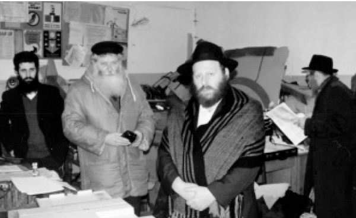

Printing the Tanya Where the Alter Rebbe Was Imprisoned
Another installment about the special shlichus performed by R’ Zalman Chanin and R’ Laibel Zajac, to print the Tanya in the Peter and Paul Fortress. * Part 4
Prepared for publication by Avrohom Rainitz

We were told that the permit was in Leningrad (Petersburg today), and that when we arrived there, it would be ready. According to our plan, we were going to spend an entire day in Leningrad and print in other places too such as the Rebbe’s apartment, the yard of the central shul, and the Tiyenem Soviet detention center, all according to the amount of time we had at our disposal.
The trip to Leningrad by train takes 10-12 hours. At first we thought of flying to Leningrad, but everybody told us that it was very dangerous. We couldn’t imagine what could be so dangerous, so they explained that due to the fuel shortage, employees at the airport stole fuel from the planes and replaced it with water. Pilots thought they had enough fuel, and often planes exploded mid-air.
So we decided to go by train, but how could we take along the printing equipment and all the paraphernalia by train? Everything had to undergo the approval of some natchalnik or another. Of course, each one had to be given a gift; otherwise, nothing would happen. The miracle was that every dollar was worth 5-6000 rubles so that our expenses weren’t that high and everyone was satisfied.
Everyone warned us to beware of thieves, because usually, when people traveled by train, in the middle of the night when everyone slept, professional thieves robbed people. They advised us to take along an iron bar to be placed across the width of the door on the inside, so it would be impossible to open the door except from the inside. We did so, but despite the iron bar, we felt insecure all night and barely slept. We were very nervous about our belongings and we took turns, while one slept the other stayed awake. In Russia of those days, our belongings were worth a fortune. Most importantly, without them, we could not print the Tanya.
We arrived at the train station in Petersburg in the morning and from there we went to the shul (where the Shamir School already existed). There were 25-30 men, most of them elderly. When I arrived at the shul, I saw an urn with tea and wanted a cup before the davening. I opened my bag and took out some cookies and went to take a cup of tea. Some older men were sitting there and when they saw my cookies, their eyes popped. I stood transfixed by the sight and couldn’t eat a thing. They were either very hungry or had simply never seen cookies like these in their lives. Either way, it was a shocking moment.
I took out all my cookies and put them on the table. I said whoever wanted any could take some, because I had more and it wasn’t just for me. I couldn’t believe my eyes when they grabbed the cookies and not a crumb remained. That goes to show you what life was like in Russia in those days.
After the davening, we had something to eat and then began getting ready for our work. In Leningrad we met a young man who joined us by the name of Avigdor Parnas. He was newly married and R’ Wagner enlisted him to help us in Leningrad.
First, we went to the Peter-Paul fortress. At the entrance to the fortress we found out that our permit to print the Tanya did not include permission to enter the fortress grounds with a vehicle and the guard refused to allow us in. But thanks to a bottle of vodka that we had with us which we gave to him, all the issues were straightened out and we were welcomed in, including the vehicle and the printing press. We got the royal treatment.
Before we printed the Tanya, we had a guided tour of the fortress, which over the years was turned into a tourist spot. R’ Avigdor, who was still young and not completely familiar with the story of the Alter Rebbe’s imprisonment, told me that he heard from older Chassidim that one of the rooms in the fortress is the room where the Alter Rebbe was imprisoned and people would go there to say T’hillim.
I wanted to see that room and R’ Avigdor passed this on to the tour guide. She had heard of the Alter Rebbe as a holy man to the Jews, and was used to people asking her about the room so they could pray there. She took us to one of the rooms and said this is where the Alter Rebbe had been.
When I saw it, I realized it couldn’t be the room since it was quite spacious with a bed, small table and big window. Although it was a wintry day, the sun shone into the room and a light wasn’t necessary. This did not fit with the story as we know it, about the dark cell where you could not tell the difference between day and night, and they asked the Alter Rebbe how he knew day and night. It also didn’t fit with the Rebbe Rashab’s question about whether there was room for three people, because the room was large and there was room for at least ten people and the Alter Rebbe could have said Chassidus there with a minyan.
I asked R’ Avigdor to ask the tour guide whether this is the identical prison to that of two hundred years ago, when the Alter Rebbe was arrested. The guide said the old building had been destroyed and this was a new building. Only the name remained the same as before and the new building also served as a prison for many years.
Since the Rebbe told us to print the Tanya there, I felt that it should be printed only in a building that remained from the time of the Alter Rebbe. I asked whether such a building existed, and to my delight, she said that outside there was a building from that period, but it was closed and was in a military zone that was forbidden to foreigners. Even military personnel needed special permission to enter there.
I decided to try and go there, and as soon as we left the prison building, we walked in the direction of the old building. It was large, a multiple story building, and at the end there was a part of the building that extended nearly till the end of the grounds all the way to the river that flowed between the prison and the Tiyenem Soviet.
We went to the front door and knocked. Nobody answered. R’ Wagner said we were knocking too gently, as people do in the US; if we wanted them to open up, we needed to knock “Russian style.” He banged on the door with his fist as the NKVD did under Stalin. Within a few seconds, a guard emerged and asked what we wanted. We told him we had a special mission to take care of inside the building and here was our permit and we wanted to enter.
The guard said he had no idea what we were talking about, and since he had received no orders to let us in, we had to leave.
We noticed that the guard was drunk like Lot, and maybe more so, and there was no use reasoning with him. R’ Wagner began speaking harshly: We have a written order to print the Tanya and you tell us you don’t know what we’re talking about?
We asked him what was in the building and he said it was a closed military area since the military printing press was there! Naturally, after hearing this, we felt we must enter and print the Tanya. What an is’hafcha (spiritual turnabout) that would be, to print the holy Tanya in a military printing house!
R’ Wagner said to him: If we want to drink something, can we enter?
As soon as he heard that we had something to drink, his eyes began racing back and forth. The very thought that he could get mashke dissipated his drunkenness and he began to understand what we were talking about.
“Do you have something to drink?” he asked eagerly. “How did you get it?” and he emitted a juicy Russian curse. Then he said, “Now you’re talking my language. Come in and I will show you what we have here.”
He was afraid to let us enter the actual building, but he agreed to show us the back part of the building, where the military press was. This was just what we wanted. We toyed with the idea of printing the Tanya on the Russian press. It took time until he brought the keys and opened the doors. They were iron doors from the days of Methuselah, not just the time of the Alter Rebbe.
After the first doors there were another series of doors made of wood. I saw similar doors in France in palaces.
The place looked like a prison. The air was dense and it felt as though you could take a knife and slice through it. There was no electricity and we wanted to light a candle, but who has a candle in Russia? Having no choice, we took a newspaper and made a torch out of it, but as we continued going further in, the fire began to sputter since there wasn’t enough oxygen to sustain it.
I told him that we have a generator and maybe we could use it for light. The problem was we couldn’t bring the generator into the building, since we were afraid that the dank air would become completely polluted and it wouldn’t be possible to breathe in the building. We couldn’t leave the generator outside, since that would necessitate a thirty foot extension cord which we didn’t have and couldn’t get.
After some more curses, the gentile said it seemed the electric fuse had burned out and he would go to the office to see if there was another fuse; then he could turn on the light.
In the meantime, we waited in the bitter cold and nearly froze. Hashem had pity on us and had the Russians play a crazy sport of rowing on the frozen river. In this game, they break the ice and try to row among the pieces. Due to the intense cold, those who stand on the riverbanks and watch, light a huge bonfire and are warmed by it. Fortunately for us, the spectators were near the fortress and we could approach their fire and warm our frozen bones a bit.
The gentile showed up a few minutes later and got the electricity working in the building. We went inside and saw a structure, hundreds of years old, without windows, just walls of stone and iron with wooden doors outside. When you are in there, you cannot tell the difference between day and night. You can practically feel the darkness.
The cold in the building was so intense that it wasn’t possible to use the printing press because the ink had frozen. He told us that he had some kind of small heater that he could bring to warm up the place, but the heater barely heated the room and we had to ask the gentiles on the riverbank to take some burning logs and bring them closer to the building. After letting them know it would be worth their while in mashke, they did as we asked and we were able to begin working.
As I mentioned earlier, I had the idea of using their printing press, but after going inside and seeing that it was a printing press from the Middle Ages where you had to arrange each letter manually, and after completing a line you have to put it into the machine, I gave up on that thought. Due to all the delays, instead of the printing taking one hour, it took about four hours.
When we finally printed the Tanya, we were thrilled. We rejoiced at having carried out the Rebbe’s wishes and having printed the Tanya in the place where the Alter Rebbe had stayed for 53 days, corresponding to the 53 chapters of Tanya. We poured cups of l’chaim and since it was already the eve of Yud-Tes Kislev after midnight, we wished one another a good, sweet year.
The gentiles too, l’havdil, took pleasure in the printing of the Tanya because they also said l’chaim. They began with what we gave them and then went lifnim mishuras ha’din (beyond the letter of the law) and drank more and more and ended up dancing a drunken dance.
About the printing of the Tanya in the Rebbe Rayatz’s home, see the next installment, G-d willing.
Beis Moshiach (staff). "Printing the Tanya Where the Alter Rebbe Was Imprisoned." Beis Moshiach, no. 898 (October 15, 2013).